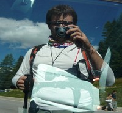

I'm an alpinist wannabe, but first of all i'm a father and an ICT System Admin at Miriade SRL. It's quite so long i'm on the Internet and i'm a Linux user since 2003, so i can say i'm pretty experienced on both. I love mountains, in particular Dolomites, principally the ones in Val di Zoldo and Pale di San Martino. I like hiking and exploring, activities that give me a lot of interior energy
I do not really know what i want to do in my future, but for sure i'll do something new that i haven't done in my past. Maybe.